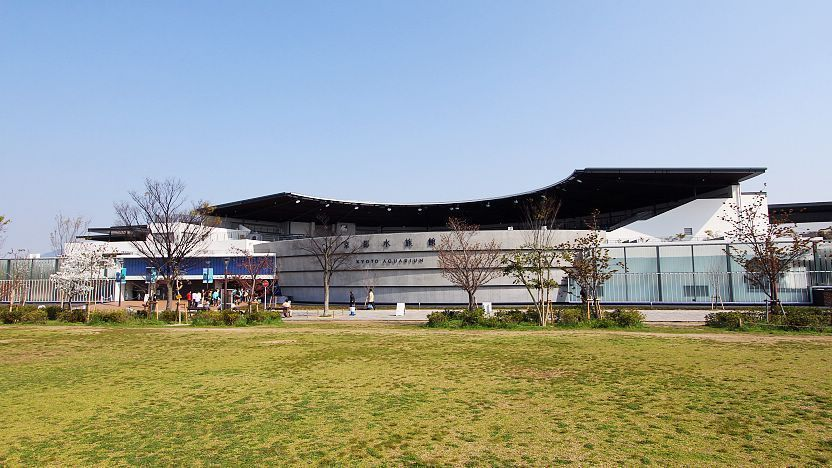

Kyoto Aquarium
Kyoto Aquarium recreates the connection of life from the source of Kyoto’s rivers to the sea and
the ecosystems where numerous life forms co-exist. Furthermore, in addition to offering exhibits,
it regularly holds interactive events where visitors can have fun while learning about aquatic life,
as well as presentations by specialist aquarium keepers. Ages 3+. Entrance Fees: Adults: 2,050yen, University and High School Student: 1,550yen,
Junior High School and Elementary School Student:1,000yen,Child(3 and over):600yen